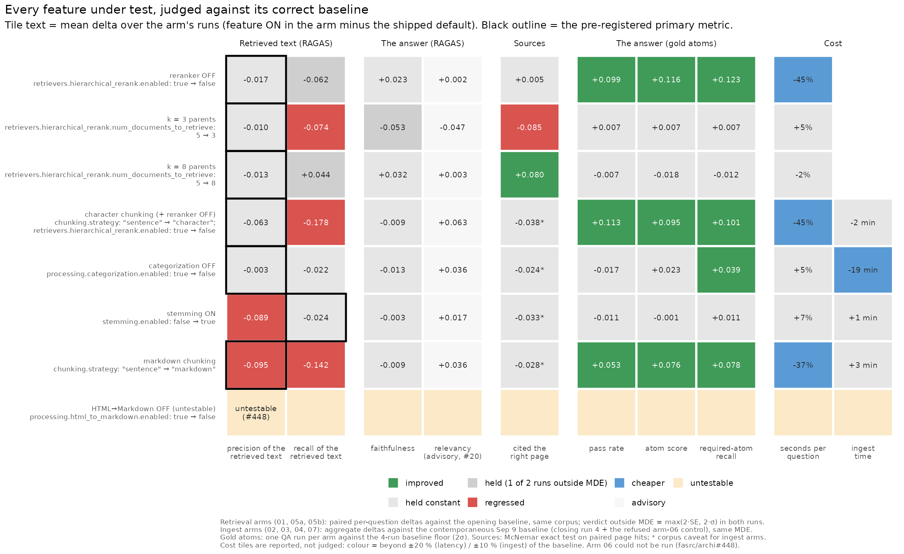
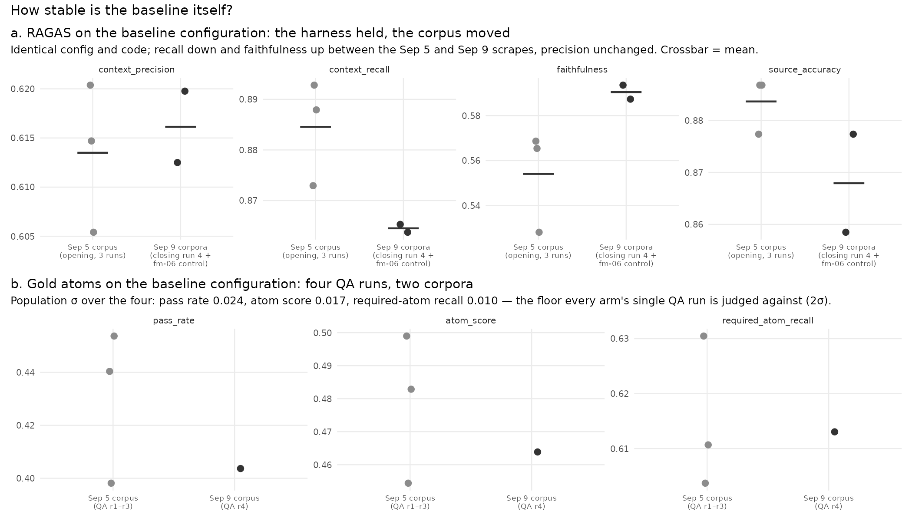
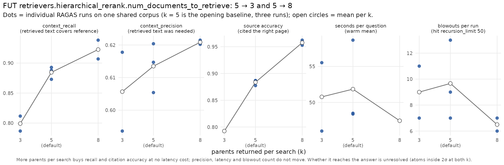
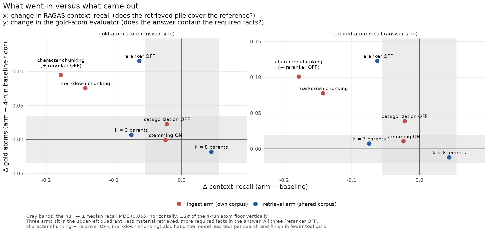
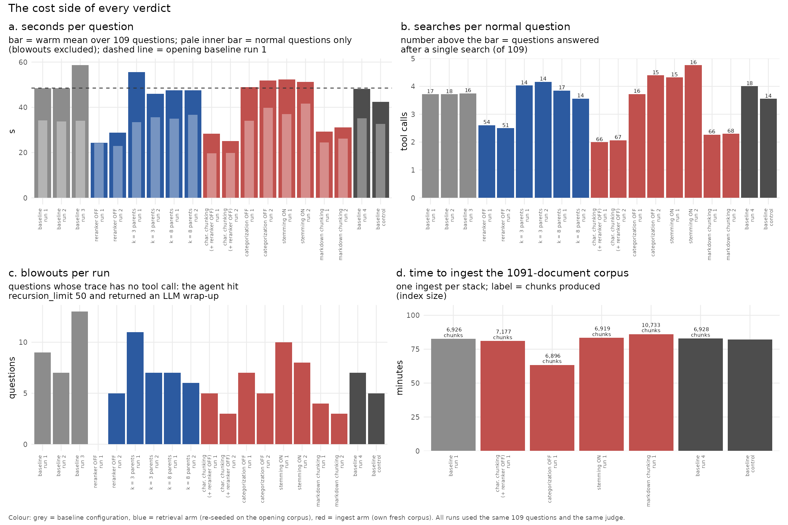

Feature-Matrix Campaign Results (2026-09)
Audience: anyone deciding whether a shipped data_manager default should change. No
RAGAS background is assumed: every metric is introduced in plain words before its name is
used, and every comparison names the feature under test as key: default → arm.
What this is. The cross-arm report for issue #396. Between 2026-09-04 and 2026-09-09, on the production GPU host, eight arms were compared against the shipped defaults, with the same 109 questions, the same judge, the same code and a locked protocol. Six arms changed one key each; arm 02 changed two keys by design (section 2.1), and arm 06 could not apply its change at all (section 3.7). The protocol, the pre-registered decision rules and the day-by-day operating log live in the campaign plan and the pre-registration; this page reports what came out. Times are EDT (the operating log's convention); artifact filenames carry UTC.
The one-paragraph answer. No retrieval-side knob moved the pre-registered primary metric
(context_precision, the share of retrieved text that was actually needed). Two ingest-side
changes made it worse: markdown chunking (hurts) and, as a strong secondary effect,
stemming. Two shipped defaults cost real money for no measurable benefit: per-document LLM
categorization adds 19 minutes to every ingest and moved no metric (it only shifts some chunk
boundaries), and the hierarchical reranker roughly doubles time per question while, in an
exploratory one-run reading, the answers it produces contain fewer of the required facts.
Returning 8 parents per search instead of 5 raised source accuracy (the reference page is
among the retrieved documents) from 0.88 to 0.96 at no latency cost, a secondary-metric result
(section 2.4). One arm, turning HTML→Markdown conversion off,
could not be run at all: the config renderer silently ignores enabled: false for that key
(fasrc/archi#448). The two evaluators disagree
on three arms, and the disagreement is informative rather than contradictory: they measure
different stages of the pipeline.

1. The short version
Each line names the feature under test (key: default → arm), the pre-registered verdict on
the primary metric in the pre-registered vocabulary (helps / hurts / no measurable difference
/ mixed), and what else moved. Full tables are in section 3.
| Feature under test | Primary verdict | What else moved | Cost |
|---|---|---|---|
retrievers.hierarchical_rerank.enabled: true → false (reranker OFF) |
no measurable difference (Δ −0.025 / −0.010, MDE 0.063) | retrieved-text recall lower in both runs (−0.072 / −0.052, one outside MDE); answer-side gold atoms up on all three metrics (+0.10 to +0.12; exploratory, one unpaired QA run) | 45 % less time per question, a third fewer searches |
retrievers.hierarchical_rerank.num_documents_to_retrieve: 5 → 3 (k = 3) |
no measurable difference (Δ −0.014 / −0.005, MDE 0.022) | recall hurts (−0.087 / −0.061); reference page retrieved 0.877 → 0.792 (p = 0.012 / 0.023) | no speed gain |
retrievers.hierarchical_rerank.num_documents_to_retrieve: 5 → 8 (k = 8) |
no measurable difference (Δ −0.014 / −0.013, MDE 0.018) | recall up (+0.060 / +0.028, one outside MDE); reference page retrieved 0.877 → 0.962 / 0.953 (p = 0.002 / 0.012) | latency flat |
chunking.strategy: sentence → character + hierarchical_rerank.enabled: true → false (two keys, pre-registered) |
no measurable difference (Δ −0.058 / −0.067, MDE 0.081) | recall hurts, worst in the campaign (−0.162 / −0.195); gold atoms up (exploratory; probably the reranker-OFF half) | 45 % faster (the reranker-OFF half) |
processing.categorization.enabled: true → false (categorization OFF) |
no measurable difference (Δ −0.004 / −0.002, MDE 0.026) | nothing on retrieval; one of three atom metrics just outside 2σ (suggestive) | ingest 19 min faster (−23 %) |
stemming.enabled: false → true (stemming ON); primary is context_recall |
no measurable difference (Δ −0.032 / −0.015, MDE 0.040 / 0.055) | precision hurts as a secondary effect (−0.091 / −0.088, MDE 0.057); the agent searches ~15 % more | +7 % time per question |
processing.html_to_markdown.enabled: true → false (HTML→Markdown OFF) |
untestable | the renderer forced the key back to true; the integrity gate refused the run after 3 h 45 m (#448) |
— |
chunking.strategy: sentence → markdown (markdown chunking) |
hurts (Δ −0.098 / −0.091, MDE 0.072 / 0.074) | recall hurts (−0.145 / −0.140); gold atoms up on all three (exploratory); +55 % chunks | 37 % faster, two searches per question instead of four |
Three things to take from the table before the details:
- The primary metric is insensitive to the retrieval knobs. Reranker and k leave
context_precisioninside its minimum detectable effect. Only two ingest-side changes move it past that bound, both downward: markdown chunking (its primary metric) and stemming (a secondary metric for that arm). The character-chunking arm's drop (−0.058 / −0.067) stays inside its MDE (0.081 / 0.082).context_recalland source accuracy are the metrics that respond to retrieval settings. - The two shipped defaults with a measurable cost buy nothing measurable. Categorization costs 19 minutes per ingest (about 1 080 LLM calls), and no retriever, prompt or embedding reads the category (it only shifts chunk boundaries, section 3.5); the reranker costs 45 % of the time per question. Section 5 proposes the issues.
- "Less material in, more facts out" happened three times. Reranker OFF, character chunking (+ reranker OFF) and markdown chunking all lowered RAGAS recall of the retrieved text and all raised the answer-side gold-atom scores (exploratory, one QA run each), while cutting searches per question roughly in half. Section 4.1 explains why this is not a contradiction.
2. What was tested and how to read the numbers
2.1 The arms
One factor flips per arm (arm 02 flips two, because character chunks carry no parent_id
and the reranker would have nothing to return). Baseline and arm configs are in
config/benchmarking/feature_matrix/ (archi-config); the feature under test is derived by
diffing each arm's data_manager block against 00-baseline.yaml, never written by hand.
| Arm | Feature under test (key: default → arm) |
Kind | Corpus | RAGAS runs | QA runs | Baseline used for the verdict |
|---|---|---|---|---|---|---|
| 00 | — shipped defaults made explicit: chunking.strategy: sentence, hierarchical_rerank.enabled: true, num_documents_to_retrieve: 5, html_to_markdown.enabled: true, categorization.enabled: true, stemming.enabled: false |
reference | opening fc8ee1b5… (Sep 5) and closing 137e41c1… (Sep 9) |
3 opening + 1 closing | 4 | — |
| 01 | retrievers.hierarchical_rerank.enabled: true → false |
retrieval (re-seeded on fm-00) |
= opening | 2 | 1 | opening, paired per question |
| 05a | retrievers.hierarchical_rerank.num_documents_to_retrieve: 5 → 3 |
retrieval | = opening | 2 | 1 | opening, paired |
| 05b | retrievers.hierarchical_rerank.num_documents_to_retrieve: 5 → 8 |
retrieval | = opening | 2 | 1 | opening, paired |
| 02 | chunking.strategy: sentence → character; retrievers.hierarchical_rerank.enabled: true → false |
ingest (own stack) | own, d7417a68… |
2 | 1 | contemporaneous (Sep 9), aggregate |
| 03 | processing.categorization.enabled: true → false |
ingest | own, 570ccaa8… |
2 | 1 | contemporaneous, aggregate |
| 04 | stemming.enabled: false → true |
ingest | own, 95574702… |
2 | 1 | contemporaneous, aggregate |
| 06 | processing.html_to_markdown.enabled: true → false |
ingest | own, e67eb9f0… |
1 (refused) | 0 | untestable (#448); the refused run is reused as a baseline-configuration control |
| 07 | chunking.strategy: sentence → markdown |
ingest | own, e7ed322f… |
2 | 1 | contemporaneous, aggregate |
Fixed for every arm: 1 091 documents from config/lists/sources.list, the 109-question bank
(104 bank rows + 5 tripwire anchors), the production agent prompt fasrc-docs.md, the
system under test (vLLM Qwen3.6-35B-A3B-GPTQ-Int4, temperature 0.3, 32 768-token in-loop
context bound, recursion_limit: 50), the judge (claude-sonnet-4-5 via HUIT Bedrock) and
the code (lock 3e07ae79…, runtime trees identical to dev tip 3170498c). Totals: 18
archived RAGAS runs, 11 QA runs, zero degraded rows, every configuration-divergence check
passed, and no arm ran a configuration it did not declare (the one that tried was refused).
2.2 What is measured
The campaign uses two evaluators that look at different stages of the same pipeline. Keep the stage in mind: most of the "disagreements" below are the two stages disagreeing.
| What is measured, in plain words | Metric | Evaluator | Stage |
|---|---|---|---|
| Of the text the agent retrieved, how much was actually needed to answer? | context_precision — the pre-registered primary metric (except arm 04) |
RAGAS, judged against the reference answer | retrieved text (what went in) |
| Did the pile of retrieved text cover the facts in the reference answer? | context_recall — primary for arm 04 |
RAGAS | retrieved text |
| Is the answer grounded in the retrieved text (no invented claims)? | faithfulness |
RAGAS | the answer (what came out) |
| Does the answer address the question asked? | answer_relevancy — advisory only (see 6.2) |
RAGAS | the answer |
| Is the page the reference cites among the documents the agent retrieved? | source accuracy (URL match against the metadata of the retrieved documents, not the links in the answer; 106 of 109 questions carry a reference URL) | harness | retrieved sources |
| Does the answer contain the specific required facts? | gold atoms: attempt pass rate, atom score, required-atom recall | archi qa, same judge model |
the answer |
| How long did a question take; how often did the agent give up? | seconds per question (warm mean, first question dropped); blowouts; searches per question | harness traces | cost |
| How long did the corpus take to ingest; how big is the index? | ingest wall seconds; chunk count | harness / ledger | cost |
A blowout is a question whose trace contains no tool call: the agent hit
services.chat_app.recursion_limit: 50, the error handler returned an LLM-written wrap-up
("The agent attempted to…"), and RAGAS scored that text as the answer. This mechanical
definition supersedes the hand counts in the operating log (which differ by one or two on
two baseline runs). A row with no tool call can also be a direct answer, so the proxy was
checked against all 20 benchmarking-fm-*.json artifacts of the campaign (the smoke run
excluded): every no-tool row is a recursion-limit wrap-up (it carries the limit marker, or
opens with "The agent attempted to…"), and no row that carries the marker has a tool call. A
normal question is any other question.
2.3 The decision rule, and which baseline each arm is judged against
- RAGAS metrics. Verdicts come from
scripts/benchmarking/compare_runs.py, never by hand. The minimum detectable effect isMDE = max(2·SE, 2·σ):SEis the paired per-question standard error over the 104 bank questions,σthe run-to-run spread of the mean measured on the three opening baseline runs of this campaign (paired σ:context_precision0.004,context_recall0.011,faithfulness0.021,answer_relevancy0.005 — all below the planning prior, so N = 2 runs per arm stood). A delta inside the MDE is the null, never a direction. Two runs combine as: outside the MDE in the same direction in both runs → a verdict; outside in one run → reported as the null, with the direction noted. This rule replaces the pre-registered pooled delta (deviation 1 in section 2.4). - Retrieval arms (01, 05a, 05b) ran on the baseline's own stack and corpus, so their deltas are paired per question against the opening baseline, exactly as pre-registered.
- Ingest arms (02, 03, 04, 07) must ingest their own corpus, and the FASRC documentation changed between Sep 5 and Sep 9 (section 4.4). They are therefore judged against the contemporaneous baseline: the mean of the two baseline-configuration runs made on Sep 9 — the closing baseline (run 4) and the refused arm-06 run, which the renderer bug turned into a baseline-configuration run on a third fresh corpus. Those two runs agree with each other to 0.0016 on recall and 0.007 on precision. The MDE applied is the tool's own for that arm and run. This is a logged deviation from the pre-registration (which compared every arm to the opening baseline; deviation 2 in section 2.4, which also gives the scrape times); section 3 shows both numbers for every ingest arm so the reader can see what the re-basing changed. It moved two secondary readings inside the MDE (the categorization-OFF and stemming-ON recall dips) and changed no primary verdict under the two-run rule.
- Gold atoms. One QA run per arm against a four-run baseline floor (three opening runs on the Sep 5 corpus plus the closing run on the Sep 9 corpus): pass rate 0.424 ± 0.024, atom score 0.475 ± 0.017, required-atom recall 0.614 ± 0.010 (mean ± population σ). A delta inside 2σ is the null. Because the arm side is a single run, an atom gain is one draw several σ from a four-point floor, not a paired test. This analysis is exploratory and replaces the pre-registered paired one (deviation 3 in section 2.4).
- Retrieved sources. Exact McNemar test on paired page hits (question by question, arm run against the reference run of the right baseline); p < 0.05 in both runs is a verdict.
- Cost is reported beside every verdict, never judged (plan §4.4 step 4).

2.4 Deviations from the pre-registration
The pre-registration fixed the analysis before any arm ran. This report departs from it in five places. Read every verdict below with them in mind.
- Each run is compared on its own; the two runs are not pooled. The pre-registration
computes one paired delta over both runs of an arm.
compare_runs.pyat the locked code compares one artifact per arm and has no pooled mode, so each run was compared separately and the two results were combined by the two-run rule in section 2.3, which the pre-registration does not contain. A pooled delta has a smaller standard error, so the pooled rule can turn a split reading into a verdict. The split readings arecontext_recallfor arms 01 and 05b,faithfulnessfor arm 05a,context_precisionfor arm 05b (both runs within 0.004 of the MDE) and, against the opening baseline,context_recallfor arms 03 and 04 (the primary metric of arm 04). The pooled deltas were not computed, so these readings are open. - Ingest arms are compared with baseline runs scraped later. The pre-registration compares every arm with the opening baseline. Section 2.3 compares the ingest arms with the mean of two baseline-configuration runs, and calls it the contemporaneous baseline. The word is approximate: arms 02, 03 and 04 were scraped on Sep 7 21:06, Sep 8 03:08 and Sep 8 10:56 (EDT), and the two controls on Sep 8 19:18 (the refused arm-06 run) and Sep 9 08:40 (the closing baseline). When the FASRC documentation changed between Sep 5 and Sep 9 is not known, so the campaign cannot say which content version arms 02–04 saw. Section 3 shows both comparisons for every ingest arm. Where a reading changes between them, the corpus is the likely cause, not a measured one.
- The gold-atom analysis is exploratory. The pre-registration fixed one opening and one closing baseline QA run and an analysis paired by item, with McNemar on pass/fail. The campaign added two opening replicates and compared each arm's single QA run with the spread of the four baseline runs (section 2.3). That spread is baseline run-to-run noise, not the noise of an arm-minus-baseline contrast, and the paired analysis was not run. Every atom reading in this report is exploratory and carries no verdict.
answer_correctnesswas not collected. The pre-registration lists all five RAGAS metrics for every arm. The locked harness enables four by default (DEFAULT_ENABLED_METRICSinsrc/utils/benchmark_schema.pyat3170498c), and no artifact of the campaign carriesanswer_correctness.- The k = 8 proposal rests on a secondary metric. When the primary metric shows no measurable difference, the decision rule allows a default-change issue only for a cheaper setting, and k = 8 is not cheaper. The proposal in section 5 rests on source accuracy and on one QA run, so it is exploratory and needs a pre-registered confirming experiment before the default changes.
3. Results by feature
Every table is framed from the feature's point of view: the shipped default in one column,
the arm in the next, then the delta with its MDE (RAGAS), 2σ (atoms) or p-value (sources),
and a one-word reading. Two RAGAS runs per arm are shown as run 1 / run 2. Baseline values
in the RAGAS rows are the paired means the tool reports for that comparison.
3.1 Reranker OFF — retrievers.hierarchical_rerank.enabled: true → false
Same corpus as the baseline, paired per question.
| What is measured | Metric | reranker ON (default) | reranker OFF | Δ (MDE or 2σ) | Reading |
|---|---|---|---|---|---|
| retrieved text was needed | context_precision (primary) |
0.633 / 0.629 | 0.608 / 0.619 | −0.025 / −0.010 (0.063 / 0.064) | no measurable difference |
| retrieved text covers the reference | context_recall |
0.891 | 0.818 / 0.839 | −0.072 / −0.052 (0.057 / 0.055) | lower in both runs, one outside MDE → the null, but 3× the baseline's own replicate spread (+0.021 / +0.016) and opposite in sign: a probable small loss |
| answer grounded in retrieved text | faithfulness |
0.561 | 0.603 / 0.565 | +0.042 / +0.004 (0.058 / 0.055) | no difference |
| retrieved the reference page | source accuracy | 0.877 | 0.877 / 0.887 | p = 1 / 1 | identical |
| answer contains the required facts | atom score | 0.475 ± 0.017 | 0.591 | +0.116 (2σ 0.034) | up (exploratory) |
| required facts recalled | required-atom recall | 0.614 ± 0.010 | 0.737 | +0.123 (2σ 0.020) | up (exploratory) |
| items passing | pass rate | 0.424 ± 0.024 | 0.523 (57 of 109) | +0.099 (2σ 0.047) | up (exploratory) |
| time per question (warm mean) | seconds | 48.5 | 24.2 / 28.9 | −45 % | much cheaper |
| searches per normal question | tool calls | 3.72 (17 questions done in one search) | 2.61 / 2.50 (54 / 51 in one search) | −1.2 | a third fewer |
| gave up (blowouts) | count of 109 | 9 (7 / 13 in the replicates) | 0 / 5 | fewer |
Reading. The pre-registered claim ("disabling the reranker lowers context_precision;
ADR 0003's +19 % still holds") is not supported: precision is inside its MDE in both runs.
What the reranker does buy is retrieved-text recall, about 0.06 of it. What it costs is time
and, on the answer side, facts: without it the agent finishes most questions in a single
search, never or rarely blows out, and, in one exploratory QA run, its answers contain more of
the required facts on all three gold-atom metrics (+0.10 to +0.12 above the four-run baseline
mean). One G8 tripwire is a genuine signal
here, not the false-positive pattern of defect #14: on the "which SLURM partition for GPU
jobs" anchor, reranker OFF drove context_precision to 0.000 in both runs (baseline
0.29–0.34) — the hybrid retriever put the right page nowhere near the top for that question.
- Caveat: the atom gain is one QA run against a four-run floor, not a paired test; the QA
references are all
draft. - Caveat: recall is "probable small loss", not a verdict, under the two-run rule.
3.2 Fewer parents per search — retrievers.hierarchical_rerank.num_documents_to_retrieve: 5 → 3
| What is measured | Metric | k = 5 (default) | k = 3 | Δ (MDE or 2σ) | Reading |
|---|---|---|---|---|---|
| retrieved text was needed | context_precision (primary) |
0.622 / 0.637 | 0.608 / 0.631 | −0.014 / −0.005 (0.023 / 0.021) | no measurable difference |
| retrieved text covers the reference | context_recall |
0.891 | 0.804 / 0.830 | −0.087 / −0.061 (0.052 / 0.057) | hurts |
| answer grounded in retrieved text | faithfulness |
0.561 | 0.510 / 0.506 | −0.051 / −0.055 (0.054 / 0.052) | one outside MDE → the null; both negative |
| retrieved the reference page | source accuracy | 0.877 (93 of 106) | 0.792 / 0.792 (84 of 106) | p = 0.012 / 0.023 | regressed |
| answer contains the required facts | atom score / required-atom recall / pass rate | 0.475 / 0.614 / 0.424 | 0.482 / 0.622 / 0.431 | +0.007 each | inside 2σ |
| time per question (warm mean) | seconds | 48.5 | 55.5 / 46.0 | +5 % | no speed gain |
| gave up (blowouts) | count | 9 | 11 / 7 | same |
Reading. The pre-registered claim was "fewer parents raise precision and lower recall". The recall half held; the precision half did not. Retrieving fewer documents bought no speed at all (per normal question 33.5 / 35.6 s vs 34.3 s), retrieved the reference page for nine fewer questions of 106 in both runs, and left the answers unchanged. Default confirmed against k = 3.
3.3 More parents per search — retrievers.hierarchical_rerank.num_documents_to_retrieve: 5 → 8
| What is measured | Metric | k = 5 (default) | k = 8 | Δ (MDE or 2σ) | Reading |
|---|---|---|---|---|---|
| retrieved text was needed | context_precision (primary) |
0.639 / 0.634 | 0.626 / 0.621 | −0.014 / −0.013 (0.018 / 0.017) | no measurable difference, but both runs sit within 0.004 of the MDE on the low side |
| retrieved text covers the reference | context_recall |
0.891 | 0.951 / 0.918 | +0.060 / +0.028 (0.042 / 0.042) | one outside MDE → the null; both positive, run 2 inside the replicate spread |
| answer grounded in retrieved text | faithfulness |
0.561 | 0.589 / 0.596 | +0.028 / +0.035 (0.046) | no difference |
| retrieved the reference page | source accuracy | 0.877 (93 of 106) | 0.962 / 0.953 (102 / 101 of 106) | p = 0.002 / 0.012 | improved |
| answer contains the required facts | atom score / required-atom recall / pass rate | 0.475 / 0.614 / 0.424 | 0.457 / 0.603 / 0.417 (108 scored) | −0.018 / −0.012 / −0.007 | inside 2σ |
| time per question (warm mean) | seconds | 48.5 | 47.5 / 47.5 | −2 % | flat |
| searches per normal question | tool calls | 3.72 | 3.85 / 3.56 | flat | |
| gave up (blowouts) | count | 9 | 7 / 6 | same |
Reading. The cleanest positive result in the campaign is source accuracy: for nine more
questions of 106 the reference page is among the retrieved documents, in both runs, at
p ≤ 0.012, with no latency cost and no rise in blowouts. It is a secondary metric and the
primary is null, so under the pre-registered rule it does not support a default change by
itself (deviation 5 in section 2.4). k does not change how much the agent searches; it changes how much
each search returns. Whether the extra material reaches the answer is unresolved: the atoms
are flat over one QA run. The k-sweep is monotonic (section 4.2).

3.4 Character chunking — chunking.strategy: sentence → character + retrievers.hierarchical_rerank.enabled: true → false
Own corpus (7 177 chunks from the same 1 091 documents, +3.6 %). Two keys by design:
character chunks carry no parent_id, so the reranker had to go too. Arm 01 measured the
reranker-OFF half alone, on the Sep 5 corpus. To read the difference between the two arms as
what character chunking adds is to assume that the two effects add and that the corpus change
did not matter. Neither was tested (one factor at a time, section 6.2), so the split below is
a reading, not a measurement.
| What is measured | Metric | sentence + reranker ON (default) | character + reranker OFF | Δ vs Sep 9 baseline (MDE) | Δ vs Sep 5 opening (pre-registered) | Reading |
|---|---|---|---|---|---|---|
| retrieved text was needed | context_precision (primary) |
0.616 | 0.558 / 0.549 | −0.058 / −0.067 (0.081 / 0.082) | −0.070 / −0.073 | no measurable difference — the MDE is wide because per-question deltas scatter when chunk boundaries change |
| retrieved text covers the reference | context_recall |
0.865 | 0.703 / 0.670 | −0.162 / −0.195 (0.069 / 0.073) | −0.183 / −0.218 | hurts — the largest regression in the campaign; reranker OFF alone was −0.06, so, if the effects add, character chunking itself costs about −0.13 |
| answer grounded in retrieved text | faithfulness |
0.590 | 0.562 / 0.601 | −0.029 / +0.010 (0.064 / 0.059) | +0.004 / +0.041 | no difference |
| retrieved the reference page | source accuracy | 0.868 (the two Sep 9 baseline runs: 0.877, 0.859) | 0.840 / 0.840 | −0.028; p = 0.63 / 0.45 | not separable from corpus variation | |
| answer contains the required facts | atom score / required-atom recall / pass rate | 0.475 / 0.614 / 0.424 | 0.570 / 0.715 / 0.537 (108 scored) | +0.095 / +0.101 / +0.113 (2σ 0.034 / 0.020 / 0.047) | up (exploratory) — within 0.02 of reranker OFF alone, which points to the reranker-OFF half | |
| time per question (warm mean) | seconds | 48.2 | 28.3 / 25.1 | −45 % | the reranker-OFF half | |
| searches per normal question | tool calls | 4.01 (Sep 9) / 3.72 (Sep 5) | 2.00 / 2.07 (66 / 67 done in one search) | half | ||
| gave up (blowouts) | count | 7 (Sep 9 run 4) | 5 / 3 | fewer | ||
| ingest | wall time / chunks | 4 960 s / 6 926 | 4 864 s / 7 177 | −2 min / +3.6 % | about the same |
Reading. Read additively (an untested assumption), everything good about this arm is the
reranker-OFF half (compare 3.1 line by line) and everything bad is the chunking. Flat 1 000-character chunks with no parent context
lose a fifth of retrieved-text recall. Default (sentence) confirmed.
3.5 Categorization OFF — processing.categorization.enabled: true → false
Own corpus (6 896 chunks, −30). The chunk-count difference is caused by the feature, not by
scrape variation: the metadata-aware splitter subtracts the document's metadata tokens from
the child chunk size, so removing llm_category frees about 8 tokens per document (measured
effective child chunk 472 → 480) and shifts boundaries slightly.
| What is measured | Metric | categorization ON (default) | categorization OFF | Δ vs Sep 9 baseline (MDE) | Δ vs Sep 5 opening (pre-registered) | Reading |
|---|---|---|---|---|---|---|
| retrieved text was needed | context_precision (primary) |
0.616 | 0.612 / 0.614 | −0.004 / −0.002 (0.025 / 0.027) | −0.014 / −0.023 | no measurable difference |
| retrieved text covers the reference | context_recall |
0.865 | 0.839 / 0.846 | −0.025 / −0.018 (0.041 / 0.036) | −0.043 / −0.031 (one outside MDE) | no difference against the Sep 9 runs; the dip against the opening baseline is probably the corpus change (deviation 2 in section 2.4) |
| answer grounded in retrieved text | faithfulness |
0.590 | 0.585 / 0.570 | −0.006 / −0.020 (0.045 / 0.050) | +0.010 / +0.004 | no difference |
| retrieved the reference page | source accuracy | 0.868 | 0.868 / 0.840 | 0.000 / −0.028; p = 1 / 0.38 | not separable from corpus variation | |
| answer contains the required facts | atom score / required-atom recall / pass rate | 0.475 / 0.614 / 0.424 | 0.498 / 0.653 / 0.407 (108 scored) | +0.023 / +0.039 (2σ 0.020) / −0.017 | one of three just outside 2σ, positive: suggestive, not a win | |
| time per question (warm mean) | seconds | 48.2 | 48.9 / 51.8 | +5 % | flat | |
| searches per normal question | tool calls | 4.01 | 3.73 / 4.39 | flat | ||
| gave up (blowouts) | count | 7 | 7 / 5 | same | ||
| ingest | wall time / chunks | 4 960 s (82.7 min) / 6 926 | 3 802 s (63.4 min) / 6 896 | −19.3 min (−23 %) | much cheaper |
Reading. The pre-registered claim ("removing llm_category does not change precision")
is confirmed, and the 2026-09-01 code audit predicted why: the category is written to
metadata and read by no retriever, prompt or embedding path. Its one structural effect is the
chunk-boundary shift described above (−30 chunks), and no metric detected that. The measured
effect of the feature is its cost — one LLM call per document, about 1 080 per ingest, 19
minutes on this host.
The atom reading (required-atom recall +0.039 against 2σ 0.020, the other two inside) is
one metric of three from one run and should be treated as noise until replicated.
3.6 Stemming ON — stemming.enabled: false → true (primary metric: context_recall)
Own corpus (6 919 chunks, −7). Stemming is applied to each child string after the hierarchical splitter has produced it, so it cannot change chunk boundaries; its −7 is the campaign's genuine measure of scrape-to-scrape variation (the closing baseline's re-scrape gave +2).
| What is measured | Metric | stemming OFF (default) | stemming ON | Δ vs Sep 9 baseline (MDE) | Δ vs Sep 5 opening (pre-registered) | Reading |
|---|---|---|---|---|---|---|
| retrieved text covers the reference | context_recall (primary for this arm) |
0.865 | 0.832 / 0.850 | −0.032 / −0.015 (0.040 / 0.055) | −0.052 / −0.029 (one outside MDE) | no measurable difference — the pre-registered claim ("stemming raises recall through BM25") is not supported |
| retrieved text was needed | context_precision |
0.616 | 0.525 / 0.529 | −0.091 / −0.088 (0.056 / 0.058) | −0.104 / −0.098 | hurts (secondary) — about 1.6× the MDE in both runs |
| answer grounded in retrieved text | faithfulness |
0.590 | 0.568 / 0.608 | −0.023 / +0.018 (0.052) | −0.006 / +0.036 | no difference |
| retrieved the reference page | source accuracy | 0.868 | 0.849 / 0.840 | −0.019 / −0.028; p = 0.61 / 0.42 | not separable from corpus variation | |
| answer contains the required facts | atom score / required-atom recall / pass rate | 0.475 / 0.614 / 0.424 | 0.474 / 0.625 / 0.413 | −0.001 / +0.011 / −0.011 | inside 2σ — the answers did not get worse | |
| time per question (warm mean) | seconds | 48.2 | 52.3 / 51.2 | +7 % | slightly slower | |
| searches per normal question | tool calls | 4.01 (Sep 9) / 3.72 (Sep 5) | 4.32 / 4.76 | the agent searches more, consistent with noisier first-pass results | ||
| gave up (blowouts) | count | 7 | 10 / 8 | slightly more | ||
| ingest | wall time / chunks | 4 960 s / 6 926 | 5 001 s / 6 919 | +1 min | same |
Reading. Stemming the indexed text made the first search less precise (about a tenth of
the retrieved text that used to be relevant no longer is), which the agent compensated for by
searching more, and the answers ended up no different. Nothing here argues for turning it on.
Default (false) confirmed.
3.7 HTML→Markdown OFF — processing.html_to_markdown.enabled: true → false — untestable
The stack deployed, ingested for 4 933 s and completed a full RAGAS pass, then
archive_run.sh refused the artifact: the run had executed with
html_to_markdown.enabled = True. The cause is in the config renderer
(src/cli/templates/base-config.yaml): the key is rendered with Jinja's default(true, true),
whose second argument substitutes the default for any falsy value, so an explicit false
becomes true. This setting cannot be turned off in any archi deployment, and 20 other
boolean keys in the same template share the pattern. Filed as
fasrc/archi#448 with the rendered config as
evidence. The pre-registered claim ("raw HTML lowers precision and faithfulness") is untested.
The refused run — a baseline configuration on a third fresh corpus — is reused in this report
only as a baseline-configuration control (sections 2.3 and 4.4), never as arm 06.
3.8 Markdown chunking — chunking.strategy: sentence → markdown
Own corpus: header-aware chunking produced 10 733 chunks from the same documents (+55 %), i.e. many more, smaller chunks and smaller parents.
| What is measured | Metric | sentence (default) | markdown | Δ vs Sep 9 baseline (MDE) | Δ vs Sep 5 opening (pre-registered) | Reading |
|---|---|---|---|---|---|---|
| retrieved text was needed | context_precision (primary) |
0.616 | 0.518 / 0.525 | −0.098 / −0.091 (0.072 / 0.074) | −0.101 / −0.109 | hurts |
| retrieved text covers the reference | context_recall |
0.865 | 0.720 / 0.725 | −0.145 / −0.140 (0.081 / 0.070) | −0.160 / −0.160 | hurts |
| answer grounded in retrieved text | faithfulness |
0.590 | 0.581 / 0.583 | −0.010 / −0.007 (0.062 / 0.067) | +0.016 / +0.022 | no difference |
| retrieved the reference page | source accuracy | 0.868 | 0.849 / 0.849 | −0.019; p = 0.58 / 0.58 | not separable from corpus variation | |
| answer contains the required facts | atom score / required-atom recall / pass rate | 0.475 / 0.614 / 0.424 | 0.551 / 0.692 / 0.477 | +0.076 / +0.078 / +0.053 (2σ 0.034 / 0.020 / 0.047) | up on all three, exploratory (pass rate just over its 2σ) | |
| time per question (warm mean) | seconds | 48.2 | 29.2 / 31.1 | −37 % | much cheaper | |
| searches per normal question | tool calls | 4.01 | 2.27 / 2.30 (66 / 68 done in one search) | half | ||
| gave up (blowouts) | count | 7 | 4 / 3 | fewer | ||
| ingest | wall time / chunks | 4 960 s / 6 926 | 5 166 s / 10 733 | +3 min / +55 % | index 55 % larger |
Reading. The pre-registered claim ("header-aware chunking raises precision on the Markdown-bearing part of the corpus") is refuted at the corpus level: precision and recall of the retrieved text both fall by more than their MDEs in both runs. The bank carries no "Markdown-bearing page" slice, so the narrower claim was not tested. (#490 disputes this caveat: every source URL in the bank resolves to a web-scraped Markdown page, so arm 07 was in effect judged on that slice. This report keeps the caveat until #490 settles it.) Yet, in one exploratory QA run, the answers improved on all three gold-atom metrics, and they arrived 37 % sooner — the same signature as reranker OFF. Section 4.1 takes this up. As a default: hurts on the primary metric, with an answer-side trade-off and a 55 % larger index; not recommended without the follow-up in section 5.
4. Cross-cutting findings
4.1 What went in versus what came out

Three arms lowered RAGAS context_recall — the retrieved pile covered less of the reference
— while raising every answer-side gold-atom metric in one exploratory QA run each: reranker
OFF, character chunking (+ reranker OFF) and markdown chunking. Read as two stages, this is not a contradiction:
- RAGAS
context_recallscores what went in. A 25-round search that eventually blows out retrieves a great deal, and scores 0.79–0.96 on recall while its "answer" is an apology. Recall cannot see a blown-out answer; within the baseline, recall against number of sources retrieved is Spearman +0.02. - Gold atoms score what came out. They fail a blown-out answer outright (blowouts pass 1 of 18 QA attempts) and reward an answer that states the required facts, however few passages it took.
The three arms share a mechanism as well as a signature: each hands the model less text per
search (hybrid 1 000-character chunks instead of ~2 048-character parents; markdown sections
as smaller parents), each roughly halves the searches per question (3.7–4.0 → 2.0–2.6) and
the number of questions answered after a single search (14–18 → 51–68 of 109), and each has
fewer blowouts. Under the production in-loop context bound (context_editing.keep: 1), a
plausible reading is that large retrieved payloads push the agent into re-searching and
eventually into the recursion limit, while smaller payloads let it answer. This mechanism
was not tested directly; section 5 proposes the experiment that would.
Which evaluator should win is a product decision. The pre-registration fixed
context_precision as primary, and by that rule none of the three arms "helps". But the
metric that users experience is the answer, and on that metric the reranker's default-on
setting is the costliest one in the campaign.
4.2 The k sweep is monotonic
k = 3 / 5 / 8 on one shared corpus (section 3.2, 3.3, figure above): retrieved-text recall
0.80 → 0.88 → 0.92, source accuracy 0.79 → 0.88 → 0.96, precision 0.61 → 0.61 → 0.62,
warm time per question 51 → 52 → 48 s, blowouts 9 → 10 → 7 per run. More parents per search
is close to a free improvement on the secondary retrieval metrics (the primary is flat, so
this is exploratory, deviation 5 in section 2.4); the answer side is flat at both k. Note
that k changes how much each search returns, not how often the agent searches (3.7–4.2
searches per normal question at every k).
4.3 About 8 % of questions never get an answer, and it dominates the latency picture

On the baseline configuration 7–13 of 109 questions per run end in a blowout (150–250 s each
against 23–40 s for a normal question). In the operating log's hand analysis of the three
opening runs (plan §13.5, 2026-09-06 13:05, under its own blowout count), 23 distinct
questions blew out at least once, 7 did so in two or more — a question-intrinsic core plus
a stochastic tail — and 17 of the 23 are reasoning items. The baseline's 48 s mean per question
is 34 s without them. This is a production behaviour, not a benchmark artifact, and it moves
every latency number more than any retrieval knob except the two that also cut the searches
per question (reranker OFF, markdown chunking). Proposed as a follow-up in section 5.
4.4 The corpus moved between Sep 5 and Sep 9; the harness did not
The closing baseline (identical config and code, four days later) reproduced the opening
chunk count to ±2 (6 926 → 6 928) and context_precision to +0.006, but landed 0.021 lower
on context_recall and 0.033 higher on faithfulness — both beyond the opening within-corpus
2σ. The refused arm-06 run, an independent scrape the same day, agrees with the closing
baseline to 0.0016 on recall and 0.006 on faithfulness. That agreement is what turns "noise"
into "a real content change in the FASRC documentation between the two dates". Consequences:
- Ingest arms are judged against the contemporaneous baseline (section 2.3). Doing so moved two apparent recall dips (categorization OFF, stemming ON) and every ingest arm's apparent +0.02–0.03 faithfulness gain inside the MDE. The two controls agree, so the corpus is the likely cause, but both were scraped after arms 02–04 (deviation 2 in section 2.4).
- Source accuracy differs by 0.019 between the two Sep 9 baseline runs, so no ingest arm's source-accuracy delta (−0.019 to −0.028) can be separated from corpus variation.
- The gold atoms drifted less than RAGAS did: the closing QA run sits inside the opening three-run 2σ on all three metrics, which is why a four-run floor spanning both corpora is used.
- Any future campaign that mixes ingest and retrieval arms needs a baseline-configuration ingest per day of ingest arms, not one at each end.
4.5 Scorecard against the pre-registered claims
| Arm | Claim under test (pre-registration) | Outcome |
|---|---|---|
| 01 | Disabling the reranker lowers context_precision (ADR 0003's +19 % holds) |
not supported — no measurable difference at MDE 0.063; recall probably lower; answers better (exploratory) |
| 02 | Character chunks + hybrid retriever lower context_precision |
not established at this MDE (−0.06 vs 0.08); recall collapses |
| 03 | Removing llm_category does not change context_precision |
confirmed (−0.003, MDE 0.026) |
| 04 | Stemming raises context_recall through BM25 |
not supported (−0.02, MDE 0.04–0.055); precision falls −0.09 |
| 05a | Fewer parents raise precision, lower recall | precision half not supported; recall half confirmed (−0.07) |
| 05b | More parents lower precision, raise recall | precision half not supported at N = 2 (−0.013 vs MDE 0.017, both runs on the low side); recall up in both runs, one outside MDE; reference page retrieved +0.08 |
| 06 | Raw HTML lowers precision and faithfulness | untested (#448) |
| 07 | Header-aware chunking raises precision on the Markdown-bearing part of the corpus | refuted at corpus level (−0.095); the slice was not testable with this bank (disputed in #490) |
5. Proposed follow-ups
Per plan §4.4 step 5: a default the campaign shows to hurt gets an issue; "no measurable difference" on a default that costs ingest time or latency is itself a finding and gets an issue proposing the cheaper setting. Filed on 2026-09-17 as fasrc/archi issues, numbered beside each item; milestones are left to the operator against the release plan's gate bar.
- Propose
processing.categorization.enabled: falseas the default (#496). No measurable effect on any retrieval metric across two runs (3.5), no retriever, prompt or embedding reads the category (it only shifts chunk boundaries), and it costs 19 min and ~1 080 LLM calls per ingest. The one atom metric just outside 2σ points the same way. Lowest-risk change in this report. - Propose
retrievers.hierarchical_rerank.num_documents_to_retrieve: 8(#498). Source accuracy (reference page retrieved) 0.88 → 0.96 at p ≤ 0.012 in both runs, recall up, latency and blowouts flat (3.3). This rests on a secondary metric with a null primary, which is outside the pre-registered decision rule (deviation 5 in section 2.4). Treat it as exploratory, and confirm it with a pre-registered experiment before the default changes. - Decide the reranker's default — this needs a human call, not more data of the same kind (#497). The primary metric says nothing; the cost is 45 % of the time per question and a third of the searches; the answer-side evaluator says the answers are better without it; retrieved-text recall says they rest on less material. The campaign's lean: the evidence for default-on is not there, and the decision should be made on the answer-side metric with a paired QA design (two QA runs per side, McNemar on item passes), which is about 6 h of compute.
- Separate "smaller payload per search" from "better chunk boundaries" (folded into #497). Reranker OFF and
markdown chunking share one signature (4.1). A two-arm follow-up that keeps sentence
chunking and the reranker but caps the parent size, or raises
context_editing.keep, would say whether the answer-side gains come from payload size — which would also settle whether markdown chunking's atom gain is worth its 55 % larger index. - Recursion-limit blowouts as a production issue (4.3; #499): ~8 % of questions, 150–250 s each, an apology as the answer. Not a benchmark artifact.
- Fix #448 and re-run the HTML→Markdown arm (#448 was fixed by #456 on 2026-09-11; the re-run is #500) under a new lock, with a same-lock baseline (about 5.5 h extra), plus the lock-time render check so an arm can never again run a configuration it did not intend.
- Defaults confirmed, no action:
chunking.strategy: sentence(against bothcharacterandmarkdownon the primary metric),stemming.enabled: false, k = 5 against k = 3. - Harness items unblocked now that the lock is released (all logged in plan §13.2):
G8 anchor threshold uses aggregate σ and fires on the baseline itself (#14; #501);
answer_relevancyabstains on ~18 % of the bank, concentrated by question class (#20; #502); QA denominator drifts by one item between runs (#16; #503);qa_arm.shfails open on a zero-scored run (#434); the benchmark service reads a baked config (#439); a chain with a manual step must page the operator, not log a marker (cost 3 idle hours on Sep 9; #504).
6. Integrity and caveats
6.1 What held
- Every archived run passed the gates: identical 109-question bank (G4), one pinned corpus per arm (G3, overridden by declaration for ingest arms), empty configuration divergence (Procedure E), one code digest and one baseline config digest across all replicates, zero degraded rows in 18 runs.
- The noise floor was measured on this campaign's own prompt, corpus and code, and came in below the planning prior on every metric, so the pre-registered N = 2 stood.
- The one run that executed a configuration other than the one it declared (arm 06) was refused by the factor check before any number from it was reported as an arm result.
- The baseline was re-run at the end; it reproduced the index to ±2 chunks and exposed a corpus change rather than a harness drift (4.4).
6.2 What to keep in mind when reading
- Deviations from the pre-registration are listed in section 2.4: runs judged one at a
time, ingest arms re-based on later baseline runs (with the refused arm-06 artifact as a
baseline-configuration control), an exploratory atom analysis, no
answer_correctness, and a k = 8 proposal from a secondary metric. Both baseline comparisons are shown for every ingest arm; under the two-run rule they reach the same primary verdict in every case. - One QA run per arm. Every gold-atom gain is a single draw against a four-run floor; the σ is the baseline's. Suggestive readings (categorization OFF) are labelled as such.
answer_relevancyis advisory. RAGAS emits no score for answers it judges non-committal; that drops 13–25 of 109 rows per run, more forreasoningitems, so paired n is 66–75 and every delta lands inside a wide MDE. It carries no verdict in this report.- G8 anchor alarms fire on baseline-vs-baseline comparisons because the threshold is the aggregate σ (5× smaller than one question's own spread); no verdict rests on them. The one anchor signal that is real (reranker OFF zeroing precision on the SLURM-partition question) is reported in 3.1.
- The QA references are all
draft; the atoms family measures relative movement, not absolute quality. All 105 bank references were unchanged for the campaign (G4). - Arms are not a factorial design. One factor at a time; interactions (for example k = 8 with the reranker off) were not measured.
- Latency shares a vLLM server; runs are timestamped and compared within the same days where possible, and the blowout count moves the mean more than server load did.
7. Reproducibility
Everything below is on the GPU host holygpu7c0717 unless noted; bench_out/ is its own
repository (fasrc/archi-bench-out) checked out inside the archi tree.
| What | Where |
|---|---|
| Protocol, gates, budget, operating log (defects #1–#20, timestamped run log) | docs/docs/proposals/feature-matrix-campaign-2026.md §1–§13 |
| Pre-registered decision rules | docs/eval/preregs/2026-09-feature-matrix.md (commit c2deac32, before any arm ran) |
| Campaign lock (bank, anchors, prompt, sources, SUT, judge, arm hashes, runtime trees) | bench_out/feature_matrix/campaign.lock, sha256 3e07ae79… |
| Arm configs | config/benchmarking/feature_matrix/*.yaml (archi-config) |
| Machine ledger, one row per run | bench_out/feature_matrix/ledger.json |
| RAGAS artifacts (18 archived + the refused arm-06 run) | bench_out/feature_matrix/benchmarking-fm-*.json |
| QA runs | bench_out/feature_matrix/qa/<stack>-arm<arm>-r<n>/ |
Per-arm reports (deltas from compare_runs.py only) |
bench_out/feature_matrix/reports/arm-*.md and .json |
| Figure data and scripts | bench_out/feature_matrix/figures/extract_figure_data.py → figures/data/*.csv; figures/make_figures.R → docs/docs/_static/feature_matrix_2026_09/*.png |
| Evidence for #448 | bench_out/feature_matrix/evidence/fm-06-rendered-config.yaml (line 383) |
To regenerate every number and figure in this page:
# per-arm reports (already archived; re-running is idempotent)
for a in 01 05a 05b 02 03 04 07 00; do python bench_out/feature_matrix/report_arm.py "$a"; done
# tidy CSVs + figures (R 4.4 with ggplot2, dplyr, tidyr, readr, jsonlite, patchwork, ragg;
# on this host: conda env at /scratch/a2rchi/conda-envs/r-bench)
python bench_out/feature_matrix/figures/extract_figure_data.py
Rscript bench_out/feature_matrix/figures/make_figures.R
The extractor recomputes every aggregate from the artifacts (mean over finite scores across all 109 rows, the artifact's own aggregate), reads paired deltas, SE and σ from the per-arm JSON, derives each arm's feature under test by diffing its YAML against the baseline, and writes the verdict grid with the rules in section 2.3. It reproduces the operating log's re-based numbers exactly.
Appendix A — run inventory
| Arm | Feature under test | Stack | RAGAS artifacts (benchmarking-<stack>-<UTC>) |
QA run | Corpus | Chunks | Ingest (s) |
|---|---|---|---|---|---|---|---|
| 00 opening | — | fm-00 |
20260905_001802, _024701, _053600 |
qa/fm-00-arm00-r1, r2, r3 |
fc8ee1b5… |
6 926 | 4 959.9 |
| 01 | hierarchical_rerank.enabled: true → false |
fm-00 (re-seeded) |
20260906_054238, _073529 |
qa/fm-00-arm01-r1 |
fc8ee1b5… |
6 926 | — |
| 05a | num_documents_to_retrieve: 5 → 3 |
fm-00 (re-seeded) |
20260906_112444, _134950 |
qa/fm-00-arm05a-r1 |
fc8ee1b5… |
6 926 | — |
| 05b | num_documents_to_retrieve: 5 → 8 |
fm-00 (re-seeded) |
20260906_175600, _203046 |
qa/fm-00-arm05b-r1 |
fc8ee1b5… |
6 926 | — |
| 02 | chunking.strategy: sentence → character; hierarchical_rerank.enabled: true → false |
fm-02 |
20260908_042141, _061046 |
qa/fm-02-arm02-r1 |
d7417a68… |
7 177 | 4 863.5 |
| 03 | processing.categorization.enabled: true → false |
fm-03 |
20260908_104423, _132337 |
qa/fm-03-arm03-r1 |
570ccaa8… |
6 896 | 3 802.3 |
| 04 | stemming.enabled: false → true |
fm-04 |
20260908_190046, _213459 |
qa/fm-04-arm04-r1 |
95574702… |
6 919 | 5 001.4 |
| 06 | processing.html_to_markdown.enabled: true → false |
fm-06 |
20260909_030421 — refused, ran as baseline config; used as a control only |
— | e67eb9f0… |
— | 4 932.8 |
| 07 | chunking.strategy: sentence → markdown |
fm-07 |
20260909_062810, _082735 |
qa/fm-07-arm07-r1 |
e7ed322f… |
10 733 | 5 165.7 |
| 00 closing | — | fm-00 (fresh) |
20260909_163725 (run 4) |
qa/fm-00-arm00-r4 |
137e41c1… |
6 928 | 4 974.4 |
Compute: about 5 days wall clock on one host, roughly 2–3 h per RAGAS run, 1.5 h per QA run, 1.1–1.4 h per ingest; 3 h 45 m lost to the refused arm and 3 h to an unattended manual step.